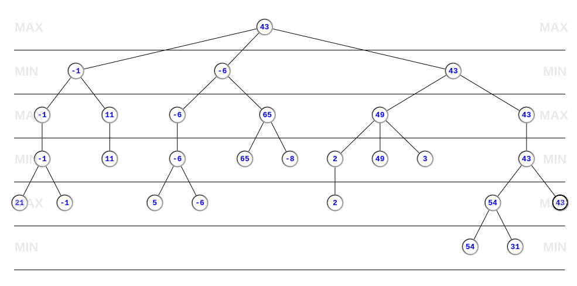
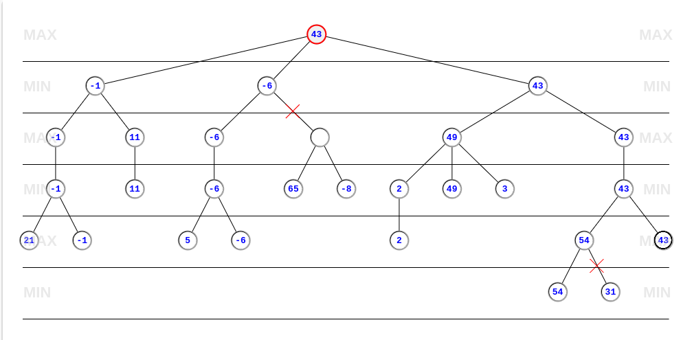

Escolha o Jogador:
O algoritmo Minimax é um algoritmo de busca adversarial que tenta escolher a melhor jogada supondo que o oponente sempre fará a melhor jogada. O algoritmo é implementado como um algoritmo de busca em profundidade recursiva.
No algoritmo, Um jogador(MAX) tenta maximizar uma função utilidade, enquanto um adversário tenta diminuir(MIN). A árvore é gerada de forma que a profundidade 0 represente um estado onde o jogar MAX, e quando descemos na árvore, alternamos entre os jogadores MIN, MAX. Dessa forma, o algoritmo encontra a melhor jogada, dado que o oponente fez a melhor jogada.
A poda alpha-beta é uma técnica que reduz o número de nós que são avaliados pelo algoritmo Minimax. O alpha é um valor que representa o a melhor escolha do jogador MAX até o momento, enquanto o beta representa a melhor escolha do jogador MIN. A poda ocorre quado o valor de beta é menor ou igual ao valor de alpha, pois dessa forma, o beta só vai receber valores menores que o próprio beta, e como alpha não vai receber o valor de MIN no beta se ele for menor que o alpha, não é necessário avaliar os nós filhos. O mesmo acontece com o jogador MAX, onde o alpha só vai receber valores se beta for maior que alpha.
